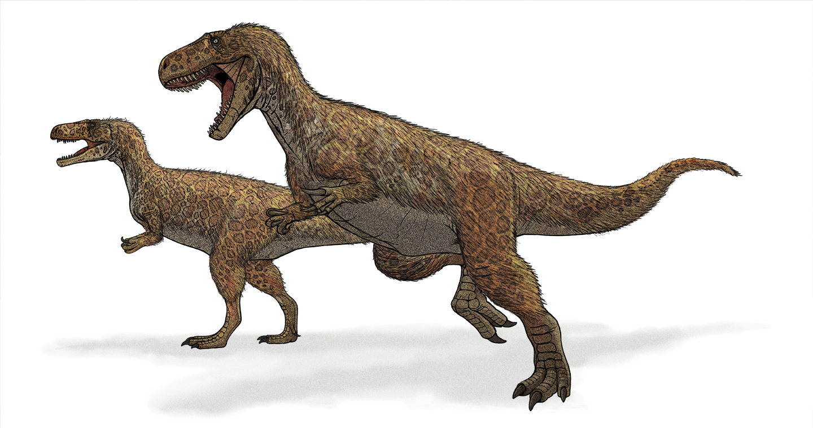

Nesta página, você vai explorar uma série de curiosidades sobre essas criaturas incríveis: como viveram, o que comiam, como se protegiam, por que desapareceram e dinossauros ainda vivos. Descubra mais sobre os mistérios da era pré-histórica e as novas descobertas que os paleontólogos fazem a cada ano.
Dinossauros habitaram a Terra por milhões de anos, vivendo em diversos ambientes, desde florestas até desertos, e se adaptando às mudanças climáticas e geográficas.
Dinossauros habitaram a Terra por milhões de anos, vivendo em diversos ambientes, desde florestas até desertos, e se adaptando às mudanças climáticas e geográficas.
Eram divididos entre herbívoros, como o Brontossauro, que se alimentavam de plantas, e carnívoros, como o Tiranossauro Rex, que caçavam outras criaturas.
No ano de 2024, a paleontologia (a ciência que estuda os seres vivos que viveram num passado remoto da Terra.) vive um marco: 200 anos da primeira descoberta acerca dos dinossauros. O primeiro dinossauro descoberto foi um Megalossauro, encontrado por William Buckland.
O megalossauro (Megalosaurus bucklandi, do latim "lagarto grande" ou "grande réptil") foi um dinossauro carnívoro e bípede que viveu durante o período Jurássico, media de 8 a 9 metros de comprimento e pesava em torno de duas toneladas. Por conta da falta de fosséis completos, os detalhes de sua aparência podem não estar certos, apesar disso, algumas representações foram criadas, com base nos ossos recuperados do grande animal extinto.
Quando pensamos em dinossauros, é comum imaginar grandes criaturas vagando por terras distantes. No entanto, o Brasil também foi o lar de diversas espécies fascinantes de dinossauros. De carnívoros temíveis a herbívoros pacíficos, muitos desses gigantes viveram em nosso território há milhões de anos. Logo abaixo, veremos algumas dessas criaturas fantásticas que pisaram em território nacional.